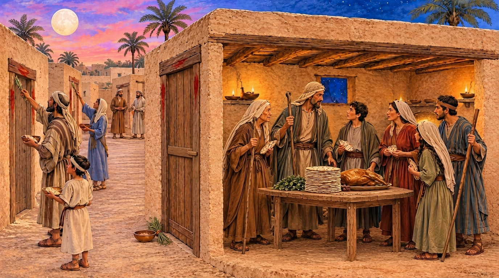

The night of the first Passover, Exodus 11–12. Click a glowing point to learn about it, or walk through the night in order.

The illustration is an artist's interpretation, made with AI. Exodus doesn't describe the house, the family, or their clothes. Every point you can click is tied to Exodus 11–12 (quotes from the ESV). Use ← → to move and Esc to close.